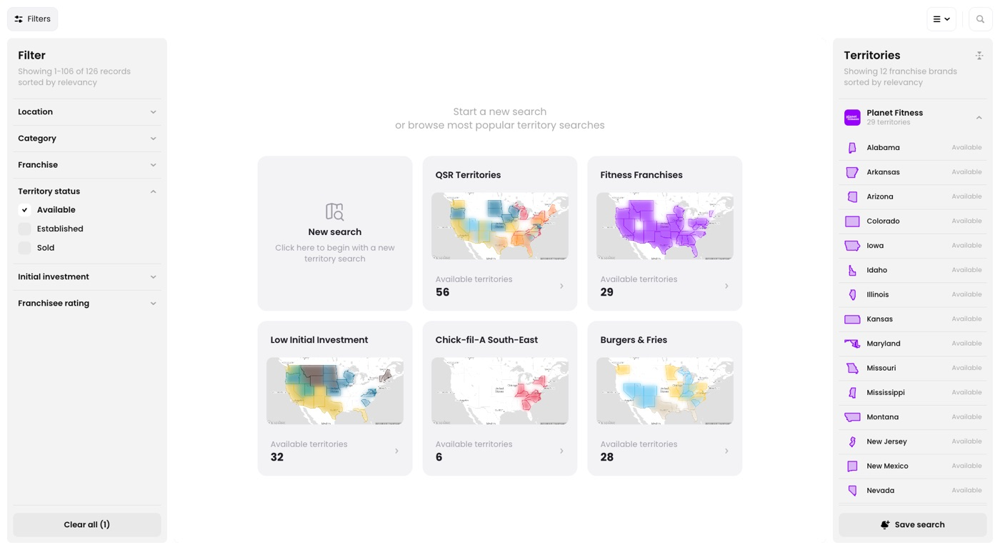
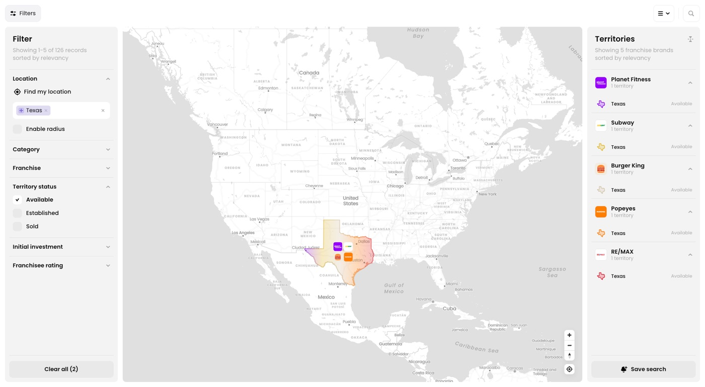
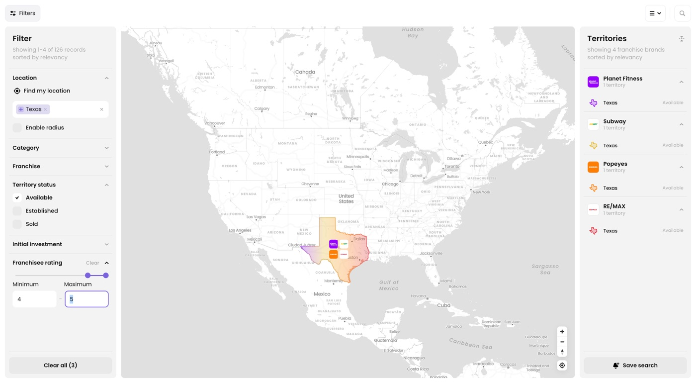
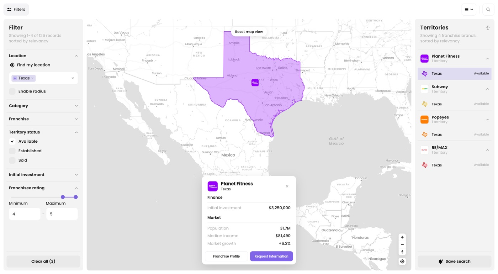

Start a new search
Territories opens on a set of popular searches — QSR in the South-East, Fitness in California, Chick-fil-A South-East, and a few others. Click New search for a blank map instead.

Filter by location
Add just Texas under Location — no other states this time. The map zooms in and the right-hand list fills with every available territory in the state: five brands, spanning food & beverage, real estate and fitness.

Filter by franchisee rating
Set Franchisee rating to a 4.0 minimum. Burger King — the lowest-rated brand in Texas at 3.9 — drops off the list. The other four stay: Subway, Popeyes, RE/MAX and Planet Fitness.

Compare rating and investment
Click each territory to open its detail card. Rating and price don't move together here — sorted by investment, low to high:

| Brand | Category | Investment | Rating |
|---|---|---|---|
| Subway | Food & Beverage | $332,500 | 4.2 |
| RE/MAX | Real Estate | $625,000 | 4.4 |
| Popeyes | Food & Beverage | $1,312,500 | 4.0 |
| Planet Fitness | Health & Fitness | $3,250,000 | 4.5 |
Planet Fitness Texas, highlighted above, is the one opened in the screenshot.
Rating and price aren't correlated. Subway is the cheapest option here and still rated 4.2; Popeyes costs almost $1M more and rates lower, at 4.0. Same state means the same population, income and growth numbers for all four — the difference is brand, not market.
Why it matters
Filtering by rating instead of category surfaces good operators regardless of industry. In one state, that turns five options into four worth comparing — and shows the priciest territory isn't automatically the best-reviewed one, or the cheapest the riskiest.
Screens shown are from the Territories prototype using sample data.